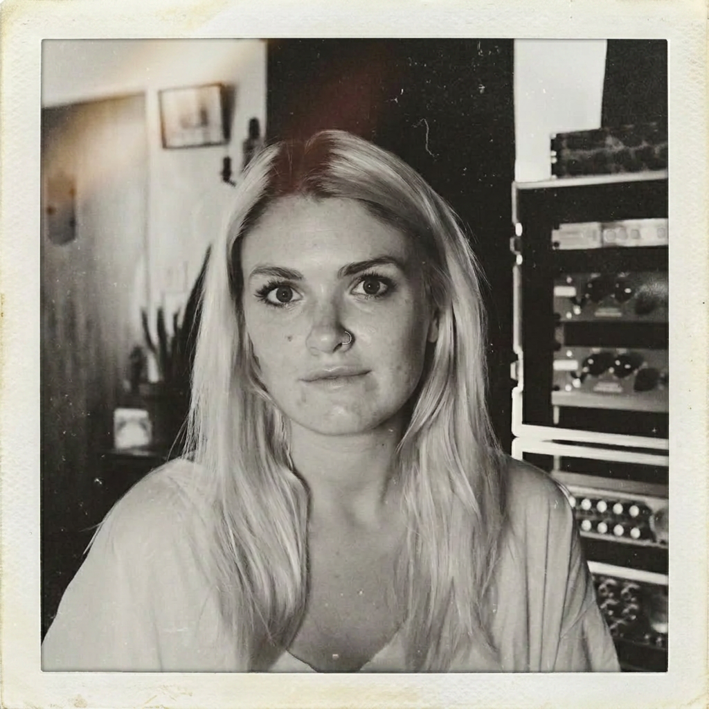

Los Angeles, CA
In service
of the song.
A father and daughter, one room, and a shared conviction that every record deserves the same care — whether it's a debut single or Album of the Year.
What artists say
Heard from the room.
“Sounds amazing. Got all choked up listening through everything.”
Finneas O'Connell — on Ocean Eyes by Billie Eilish
“Best mastering engineer in the game.”
Cameron Olsen — Weathers“I seriously don't know how you get the mix to sound so 3D. I've been making music a long time and I've never had a mastering engineer take it to this level.”
Keith Harris“I comp'd your master against Logic's mastering and yours smoked it.”
Mike McAllisterThe Studio
A career spent listening
to what music needs.
Clearlight was built on a simple belief: the music always comes first. John Greenham founded the studio after years in other people's rooms, and the principle hasn't moved since — be useful to the song, and be easy to work with while you do it.
Artists and mixers trust his ear, but what tends to bring them back is the way he works: deeply collaborative, quietly certain, and genuinely invested in every record that crosses the desk.
John Greenham
Mastering Engineer · Four-time Grammy Winner

Tess Greenham
Studio Director · Client Relations
The Family
A daughter who grew up
hearing music differently.
Tess Greenham runs everything around the music — schedules, revisions, and the part most studios get wrong, which is simply answering people. She grew up around this work and believes a great master is as much about the relationship as the result.
Between them they keep Clearlight small on purpose. You deal with the two people doing the work, you get a straight answer, and nobody is ever precious about a revision.

assets/john-tess.jpg
“We keep it to the two of us on purpose. You get our full attention, or you get someone else’s studio.”
John & Tess Greenham
Recognition
Four Grammy wins.
Work that travels.
At the 62nd Grammy Awards, records mastered in this room took Album of the Year, Record of the Year and Best Engineered Album in a single night — all three categories John was nominated in. Record of the Year came back the following year for “everything i wanted.”
Beyond that, three consecutive Best Norteño Album winners for Los Tigres del Norte were mastered here too. The work spans genres, generations and continents.
Awards matter less than the music does. But they don't hurt.
4
Grammy Wins
3×
Norteño Winners
28B+
Streams (est.)
Work with us
Tell us about the record.
We’ll tell you what we’d do.
Send us the project and what you’re hoping for. You’ll hear back from John or Tess — not an inbox — with honest thoughts on how best to serve the song.
Get in Touch